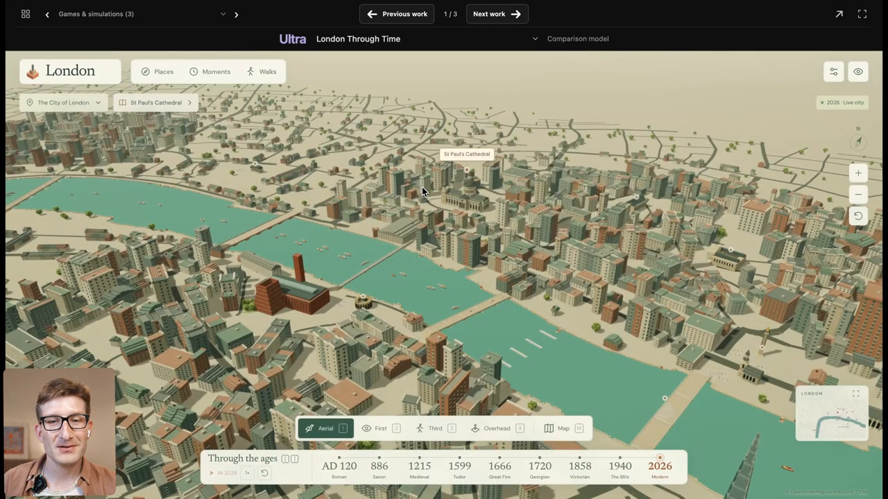
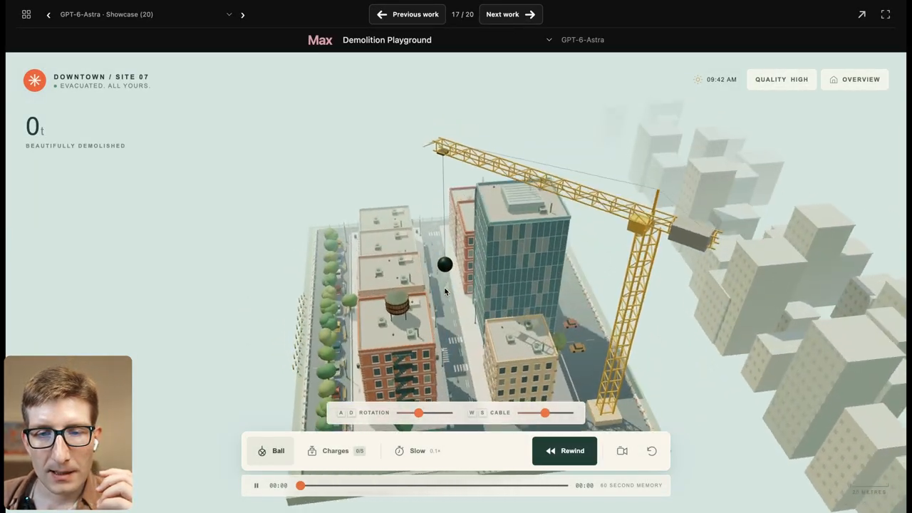
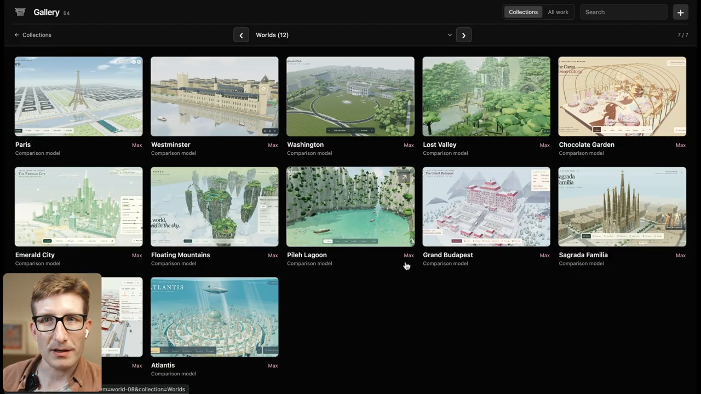

The short answer
I did not recover hidden prompt text from pixels. That is impossible here because the video never displays the prompts. I reconstructed a minimum sufficient specification for each visible result, then checked that specification against Peter Gostev’s narration and his public prompt repository. The strongest product of this process is therefore not an alleged verbatim prompt; it is a reusable prompt architecture with explicit confidence labels.
What the output did
Scene composition, camera behavior, UI, visible interactions, motion systems, transitions, scale cues, defects, and what Peter explicitly said about one-shot versus iterative generation.
What a prompt would need to request
A compact set of requirements likely to produce the observed behavior: world scope, opening frame, systems, camera grammar, controls, constraints, performance strategy, and acceptance tests.
What public text corroborates
Eighteen scenes strongly match entries in the public collection by title, features, camera, controls, and technical requirements. Correspondence is strong; verbatim use is not proven.
What cannot be recovered
The exact submitted wording, hidden system instructions, starting files, tool state, intermediate conversations, rejected attempts, exact runtime settings, or whether a public prompt was edited before use.
What “watching” the video meant
I used the full audiovisual source, the full timestamped transcript, a complete timeline sampling pass at five-second intervals, and targeted full-resolution frames around every project transition and important interaction. This gave substantial visual and temporal coverage across the complete runtime. It was not a claim that every one of the roughly 101,000 source frames received separate human inspection.



Four synchronized evidence channels
| Channel | What it can establish | What it cannot establish |
|---|---|---|
| Rendered video | Visible state, behavior, composition, interaction, defects, UI, transitions, and apparent performance. | Hidden code, prompt text, off-camera attempts, or factual correctness. |
| Narration and transcript | Peter’s descriptions of effort, reasoning level, one-shot status, evaluation, and uncertainty. | Independent verification of his claims or details he does not state. |
| Public prompt repository | Actual prompt-writing patterns and strong correspondences to many scenes. | That any specific repository text was pasted verbatim into the demonstrated run. |
| Cross-scene comparison | Repeated structures that survive changes in subject matter and likely represent a reusable design grammar. | Causal proof that any one phrase or section produced the improvement. |
The reverse-engineering method
The method converts observable effects into candidate requirements, while preserving uncertainty. It resembles system identification more than transcription.
Acquire
Preserve the original video, metadata, transcript, and authoritative prompt repository with hashes and timestamps.
Segment
Split the timeline by project and generation regime: multi-hour iterative builds, one-shot Max runs, reasoning-level comparisons, and final gallery items.
Encode
Record each scene using one observation schema instead of free-form impressions.
Triangulate
Align what is visible with what Peter says and what the repository specifies. Disagreement remains visible.
Invert
Translate each output property into the least speculative prompt or workflow requirement that could plausibly cause it.
Falsify
List failure modes, unknowns, and acceptance tests. A reconstruction without a way to fail is merely fan fiction.
The observation schema
| Observed dimension | Questions asked while inspecting | Candidate prompt section |
|---|---|---|
| Opening composition | What is visible in the first useful frame? What makes the premise legible without explanation? | First-frame contract |
| World extent | Is this a hero object, a diorama, or a continuous world? What remains visible at wide and close scales? | Scope and nested scale |
| Spatial semantics | Which landmarks, zones, paths, layers, and relative placements make the place recognizable? | World model and layout |
| Motion | Which independent systems move? Are they periodic, agentic, reactive, or merely decorative? | Behavior systems |
| Interaction | What can the viewer do? Does every control create an obvious state change? | Interaction grammar |
| Camera | What is the default view? Which presets expose different scales or causal mechanisms? | Camera choreography |
| Art direction | What palette, material hierarchy, typography, light, atmosphere, and density create the taste? | Editorial system |
| Engineering | What likely needs instancing, batching, LOD, procedural textures, pooling, or quality degradation? | Performance architecture |
| Failures | What is visibly wrong—floating bridges, rotated landmarks, weak motion, collisions, incomplete geography? | Negative constraints and tests |
| Evidence status | Was the detail seen, narrated, repo-correlated, inferred, or unknown? | Confidence ledger |
A concrete inversion example
In the Manhattan segment, the visible result shows the entire island as a coherent silhouette, recognizable density zones, active rivers and traffic, and the ability to approach closer detail. The corresponding public prompt independently specifies the whole island, continuous zoom, correct macro-geography, landmark silhouettes, moving systems, nested LOD, camera presets, and a degradation order. The defensible inference is therefore not “Peter must have used these exact words.” It is: a prompt seeking this result should explicitly preserve whole-island identity across scale while assigning separate performance strategies to far, middle, and near detail.
How the workflows were reconstructed
The video supports coarse workflow classes, not exact command-by-command histories. Peter explicitly distinguishes several-generation and multi-hour work from the one-shot gauntlet.
| Observed regime | Direct video evidence | What may be inferred | What remains unknown |
|---|---|---|---|
| London Through Time | Described as ambitious, “several generations,” not a quick one-shot; 00:19–01:38. | A staged workflow separating data/era representation, navigation, rendering, and refinement is more plausible than one monolithic pass. | Exact number of generations, prompts, code edits, and checkpoints. |
| D-Day / Omaha | Ultra reasoning, many hours, combination of Blender asset design and a Three.js environment; 01:39–03:24. | Asset production and runtime integration were distinct workstreams; visual and behavioral tests were probably iterative. | Which assets were generated, imported, hand-fixed, or reused; exact tool chain and licensing. |
| Open-world game | Prompt requested “10-hour gameplay”; generation ran for hours or overnight; Peter had not played ten hours; 03:25–05:35. | The output should be treated as a promising prototype until long-run playability, state progression, and stability are tested. | Whether it contains ten hours of unique content, persistence, completion logic, or robust enemy behavior. |
| One-shot gauntlet | Max reasoning, roughly 20–40 minutes per run, with zero cherry-picking claimed; begins 05:36. | These are useful capability probes because prompts and run regime were comparatively consistent. | Variance across repeated runs, hidden scaffold, exact settings, and independent verification of zero selection. |
| Reasoning ladder | Low through Ultra shown for Rome and Sagrada Família; richness generally rises, but Max/Ultra are not always preferred; 23:05–28:50. | Use adaptive escalation based on observed deficits rather than defaulting to the largest budget. | Exact token counts, dollar cost, latency distribution, and repeatability. |
Supported meta-patterns and best practices
The public repository contains 63 prompts. A mechanical keyword scan provides conservative lower bounds for recurring structures. It does not prove causality, and it can miss semantically equivalent wording.
| Recurring structure | Prompts containing it | What this supports |
|---|---|---|
| Three.js named | 62 / 63 | The collection is primarily a web-runtime engineering benchmark, not generic text-to-image prompting. |
| Instancing language | 58 / 63 | Perceived density is paired with an explicit draw-call strategy. |
| Visible motion or dynamism | 51 / 63 | “Alive” is usually decomposed into concrete moving subsystems. |
| Performance target or device constraint | 50 / 63 | Performance is part of the requested product, not cleanup after generation. |
| Camera presets or modes | 49 / 63 | The camera is treated as an explanatory and dramatic instrument. |
| Compact or deliberately minimal UI | 49 / 63 | Controls should reveal the world without visually replacing it. |
| Procedural generation | 48 / 63 | Large scope is achieved through systems, not individually authored objects. |
| Explicit negative constraints | 48 / 63 | The prompts name known collapse modes, not only desired adjectives. |
| LOD or level-of-detail language | 39 / 63 | Many prompts plan different representations for different distances. |
| Explicit first-frame instruction | 36 / 63 | The initial composition often functions as a visual acceptance test. |
| Explicit acceptance or guardrail wording | 24 / 63 | A substantial subset ends with non-negotiable outcome criteria. |
Prompt lengths range from 81 to 1,825 words, with a median of 484. This describes the collection; it does not show that longer prompts are better.
1. Specify one impossible but coherent thesis
The strongest prompts have a single legible premise: one riverbank across two thousand years, an entire island through continuous zoom, a painting becoming a traversable world. Ambition is concentrated rather than scattered.
Use: write one sentence that tells the viewer what cannot normally be seen but should become immediately understandable.
2. Make the first frame an executable contract
Name the camera position, scale, light, principal actors, active event, and information hierarchy visible before interaction.
Use: require a cold-open state that can be judged from one screenshot. Avoid title screens and explanatory reveals unless they are the product.
3. Build a world, not a hero object
Repeated prompts specify connective tissue: paths, traffic, crowds, vegetation, water, weather, background infrastructure, and scale cues. This is what prevents a centerpiece from floating in an empty diorama.
Use: define center, surrounding zones, connections, and horizon. State which relationships must remain recognizable.
4. Treat scale as multiple representations
Wide-view silhouette, mid-range structure, and near-view micro-detail are different engineering problems. The repository repeatedly combines procedural generation, instancing, merged geometry, and LOD.
Use: specify what must survive at each distance and what may be simplified first.
5. Decompose “alive” into independent systems
Water, weather, crowds, vehicles, fauna, smoke, cloth, lights, and machinery are named separately. Peter repeatedly notices when otherwise beautiful scenes lack dynamism.
Use: request three to five asynchronous systems with different rhythms and at least one causal interaction. “Add animation” is too weak.
6. Use camera presets as explanations
A good preset is not a decorative angle. It reveals a scale, mechanism, comparison, or story beat: whole-world hero, street dive, cross-section, process close-up, or before/after alignment.
Use: give every preset a question it answers.
7. Demand controls with visible consequences
Time sliders, era selectors, density controls, cross-sections, lighting, and process triggers work because the user can form and test a mental model.
Use: limit the primary controls and specify the state transition each must produce. Hide implementation diagnostics.
8. Art-direct the interface with the scene
The prompts often specify typography, palette, materials, translucency, whitespace, and compact controls. Peter explicitly praises improved UI taste around 07:32–07:55 and the Swiss trail around 20:37–21:21.
Use: define an editorial system and one accent; prevent generic dashboard chrome from dominating the visual world.
9. Name the collapse modes
“Do not create a generic rectangular city” is more operational than “make it accurate.” Negative constraints encode failure history.
Use: list three to six recognizable failures: sparse stage, identical motion, wrong silhouette, frozen agents, occluded hero, or UI-first opening.
10. Design graceful degradation
Many prompts say what a quality selector may reduce before touching the core spectacle. That priority ordering protects identity under performance pressure.
Use: drop distant particles, reflection quality, and crowd density before landmarks, interaction, or hero motion.
11. Separate benchmark mode from production mode
A one-shot run tests coordination under a fixed constraint. A production result needs iteration, factual review, modularity, cross-device testing, accessibility, and failure recovery.
Use: preserve the one-shot output as baseline evidence, then improve it with an explicit defect ledger.
12. Escalate reasoning only when the defect warrants it
In the video, higher levels generally add richness, but Max or Ultra can have worse color coordination or no clear advantage. More compute is not a monotonic taste function.
Use: prototype composition and controls cheaply; escalate for coordination, architecture, and stubborn defects; compare against the cheaper baseline.
What the evidence does not support
This is the section that keeps a pattern catalog from turning into mythology.
Longer prompts are better
Not established Length covaries with complexity. No controlled length ablation was shown.
“Billion-piece” is a magic phrase
Not established In the repository it is rhetorical shorthand for perceived density, immediately paired with instancing and LOD. Literal billion-object geometry would be the wrong interpretation.
Repository text equals submitted text
Not established Prompt text never appears in the video. Strong scene correspondence is not provenance proof.
Max or Ultra is always best
Contradicted The presenter sometimes prefers lower levels and questions Ultra’s value at 25:51–28:39.
One-shot means reproducible
Not established A single sample says nothing about run-to-run variance. Repeat trials were not shown.
Visual plausibility means accuracy
Explicitly uncertain Peter repeatedly says he does not know whether geography, biology, or historical details are accurate.
The prompt is the whole causal story
Not established System instructions, scaffolds, tools, dependencies, model build, files, and hidden iterative state are not visible.
More animated objects mean better simulation
Too weak Motion can be decorative. Causal coupling, collision discipline, phase diversity, and responsiveness are separate qualities.
The ten-hour game contains ten hours
Not verified The task asked for that duration; Peter says he had not played it for ten hours.
These patterns generalize to every 3D task
Not established The corpus is one creator’s web-3D benchmark style. CAD, scientific simulation, VR, games, and training systems have different success criteria.
A new-scenario prompt compiler
The following is an analyst-derived design instrument, not a prompt shown in the video. It distills only the supported recurring structures and makes the missing decisions explicit.
Design sequence
- Declare the job. Is this spectacle, explanation, exploration, rehearsal, simulation, or benchmark? Choose one primary job.
- Define the truth standard. Decide whether visual plausibility is sufficient or whether geometry, chronology, mechanics, and labels need authoritative references.
- Write the impossible thesis. Combine one place or system with one transformation, hidden mechanism, scale jump, or counterfactual that remains coherent.
- Storyboard the first frame. Specify camera, composition, light, active event, foreground/midground/background, and what proves the thesis instantly.
- Model the world. Name zones, landmarks, paths, layers, population, background, and invariants. Avoid unordered object lists.
- Model time and behavior. Give three to five systems distinct rhythms and at least one causal or reactive link.
- Give the camera a curriculum. Each preset should reveal a scale, mechanism, contrast, or consequence.
- Keep interaction legible. Use a small number of controls whose effects are visible within seconds.
- Budget the renderer. Set target device, frame-time budget, LOD tiers, instancing strategy, particle limits, and degradation order.
- Write failure tests. Convert likely collapse modes into screenshot, interaction, correctness, and performance checks.
Fillable master specification
OBJECTIVE Create a [runtime/engine] experience whose single coherent premise is: [ONE SENTENCE: place/system + impossible but understandable transformation]. Primary user job: [spectacle / explanation / exploration / rehearsal / simulation]. Truth standard: [plausible / reference-grounded / quantitatively validated]. FIRST-FRAME CONTRACT Open immediately at [camera position and lens/scale] during [light/weather/time]. The viewer must see [foreground], [midground], [background], and [active event]. This one frame proves the premise because [observable criterion]. No [title screen / loading reveal / dashboard-first opening / other collapse]. WORLD MODEL Anchor: [central subject]. Zones: [3–6 spatial or semantic regions]. Connections: [roads, flows, sightlines, ecological or causal links]. Invariants: [silhouettes, relative positions, scale relationships, facts]. Nested detail: wide [ ], middle [ ], near [ ]. BEHAVIOR SYSTEMS 1. [system] moves/reacts by [rule and rhythm]. 2. [system] moves/reacts by [rule and rhythm]. 3. [system] moves/reacts by [rule and rhythm]. Causal interaction: when [state/event], [visible consequence]. Avoid synchronized loops, intersections without collision logic, and frozen agents. CAMERA AND INTERACTION Default camera: [hero composition]. Presets: [whole-system], [human-scale], [mechanism], [comparison/cross-section]. Primary controls: [maximum 3–5], each causing [explicit visible state change]. Reset always restores [known valid state]. Keyboard and reduced-motion paths required. ART DIRECTION Palette [ ]; materials [ ]; typography [ ]; atmosphere [ ]; density [ ]. The interface is [editorial description], subordinate to the world, with one accent. ENGINEERING AND PERFORMANCE Target: [device/browser/resolution], [FPS or frame-time], [memory ceiling]. Use procedural generation for [ ], instancing for [ ], pooling for [ ], LOD for [ ]. Quality degradation order: reduce [1], then [2], then [3]; never remove [identity-critical features]. Pin dependencies; define offline/network policy; surface load or runtime failure. ACCEPTANCE TESTS - Screenshot: first frame visibly contains [criteria]. - World: [spatial invariants] are preserved. - Motion: at least [N] independent systems are visible and phase-diverse. - Interaction: each control causes [testable result] and reset recovers. - Truth: validate [sampled facts/mechanics] against [named source]. - Performance: sustain [target] for [duration] on [hardware]. - Accessibility: keyboard path, contrast, labels, reduced motion. NEGATIVE CONSTRAINTS Do not collapse into [generic diorama], [single hero object], [static tableau], [UI-heavy dashboard], [incorrect silhouette], or [subject-specific failure]. OUTPUT Deliver [single file / modular application], plus a brief manifest of assumptions, dependencies, known limitations, and which acceptance tests passed.
How to invent a genuinely new scenario without copying the corpus
Choose one element from each column, then reject combinations that lack a coherent causal story. The method is analyst-derived; the categories are not claimed as Peter’s own framework.
| Anchor | Revelatory operation | Time structure | User agency | Truth regime |
|---|---|---|---|---|
| Place, organism, machine, network, material, event | Cross-section, scale dive, reconstruction, counterfactual, flow tracing, synchronized comparison | Instant event, cycle, deep-time slider, branching future, reversible process | Explore, steer, perturb, compare, diagnose, assemble | Poetic, plausible, historically sourced, scientifically constrained, operationally exact |
Selection test: the combination should produce a visual insight unavailable in a static image. If it only makes a familiar scene prettier, it is not yet a strong interactive 3D premise.
Your unknown unknowns—surfaced and addressed
These questions determine whether a generated scene is a striking demo, a repeatable benchmark, or a usable product. “Current answer” distinguishes what the evidence tells us from the default action I recommend.
| Question you should ask | Current answer from this evidence | Practical resolution |
|---|---|---|
| 1. What is the actual reproducible unit: prompt, conversation, scaffold, or repository? | Unknown. The video exposes results and coarse run classes, not full state. | Archive model/build, reasoning level, system prompt, full conversation, starting files, tool permissions, dependency lockfile, output, and run log together. |
| 2. How stochastic is the result? | Not measured. One run per one-shot prompt does not estimate reliability. | Run each candidate at least three times; five for important decisions. Score median and worst case, not only the best frame. |
| 3. Is the prompt doing the work, or is hidden scaffolding? | Unresolved. Public prompts demonstrate detailed specification, but hidden environment effects remain possible. | Ablate: same prompt in empty project, standard scaffold, and enriched scaffold. Diff capability, breakage, and generated code volume. |
| 4. Are public examples contaminating the benchmark? | Unknown. Public availability does not prove training exposure, but memorization cannot be excluded. | Create held-out scenarios after the model snapshot, plus compositional variants that preserve difficulty while changing subject and layout. |
| 5. Does “zero cherry-picking” eliminate selection bias? | No. It is Peter’s explicit claim for displayed runs, but prompt selection, prior prompt-design experience, capture timing, and benchmark choice still shape the sample. | Pre-register prompts and scoring, preserve every run, report failures, and let an independent evaluator reproduce a subset. |
| 6. Is the scene correct or merely convincing? | Mostly unverified. Peter flags uncertainty about D-Day assets, leaf biology, Manhattan, Istanbul, the White House, and other subjects. | Define authoritative sources before generation. Sample critical geometry, chronology, labels, and behaviors with a domain-specific checklist. |
| 7. Is motion physically or causally meaningful? | Mixed. Visible motion is common, but the video itself notes weak dynamism and shows occasional collisions or simplistic behavior. | Test causality: perturb wind, density, time, or agent state and verify the expected local and downstream response. Penalize decorative loops. |
| 8. Does the experience survive beyond the demo path? | Unknown. The 10-hour game was not played for ten hours; most scenes receive brief inspection. | Run a 30–60 minute soak test, random camera/control fuzzing, reset tests, boundary traversal, memory monitoring, and save/restore where relevant. |
| 9. How much “quality” is camera and art direction rather than world quality? | Confounded. A strong hero frame and restrained UI materially shape judgment. | Score geometry, behavior, interaction, truth, camera, and art direction separately. Re-evaluate all models with one fixed camera path. |
| 10. What is the real cost-quality frontier? | Not available. The video provides rough latency but no exact tokens or dollars; higher reasoning is non-monotonic in taste. | Log tokens, wall time, retries, tool calls, and cost per accepted run. Compare marginal rubric gain per dollar and minute. |
| 11. Which prompt sections actually matter? | Unknown. Recurrence is not causation. | Run controlled ablations: remove first-frame contract, negatives, LOD plan, motion decomposition, or camera presets one at a time. |
| 12. What requirements conflict? | The corpus often asks for enormous detail, smooth laptop performance, no external assets, correctness, and rich motion simultaneously. | State a priority hierarchy. Recommended default: identity and interaction correctness, then stable performance, then close detail, then decorative density. |
| 13. What does “smooth on a modern laptop” mean? | Undefined and non-portable. | Name hardware, browser, resolution, device-pixel ratio, minimum FPS or frame time, memory ceiling, load time, and test duration. |
| 14. Are assets and dependencies legal, traceable, and stable? | Not established by the video. D-Day explicitly combines Blender assets with Three.js; exact provenance is not shown. | Require an asset/dependency manifest with origin, license, transformation, version, hash, network requirement, and attribution. |
| 15. Is generated code secure? | Not evaluated. A visually successful page can still load mutable CDNs, expose secrets, or contain unsafe controls. | Pin dependencies, prohibit secrets in clients, apply CSP, inspect network calls, run dependency and static security checks, and sandbox untrusted assets. |
| 16. Is the single-file miracle maintainable? | Not demonstrated. Peter celebrates complexity in one file, but compact deployment and maintainable architecture are different objectives. | Keep the one-file baseline, then refactor systems, state, renderer, assets, and tests into modules. Require behavioral parity after refactoring. |
| 17. Is it accessible and comfortable? | Not evaluated in the video. | Add keyboard operation, visible focus, labels, contrast, reduced-motion mode, pause controls, non-3D fallback explanation, and motion-sickness-safe camera defaults. |
| 18. Is the historical or sensitive subject handled responsibly? | Not systematically addressed. Spectacle can overwhelm context, especially for D-Day or disaster scenes. | Define audience, educational purpose, sourcing, uncertainty labels, violence level, and what must not be gamified or aestheticized. |
| 19. Does a control expose a model—or just trigger an effect? | Varies. Some timelines and cross-sections clarify mechanisms; some controls are aesthetic. | For each control, write the hypothesis a user can test and the observable consequence. Remove controls without a cognitive or operational job. |
| 20. Will the prompt survive a new model generation? | Unknown. Model behavior and tool environments drift. | Version prompts as tests, preserve reference screenshots and interaction traces, rerun on upgrades, and revise only after diagnosing the changed failure mode. |
| 21. Are you optimizing for a benchmark instead of your product? | A real risk. Peter describes 3D coordination as a proxy for complex codebase capability around 13:56–14:20. | Use the benchmark to test coordination, then validate the actual application workflow separately. Proxy gains do not guarantee domain gains. |
| 22. When should you stop adding detail? | The corpus emphasizes maximum ambition, but it does not define diminishing returns. | Stop when the primary job, first-frame proof, interaction tests, truth checks, and performance target pass—and the next detail adds less value than reliability work. |
A rigorous protocol for your next 3D prompt
- Write a one-page scenario specification with the compiler above. Do not begin with adjectives; begin with user job, truth standard, and first-frame proof.
- Generate a low-cost architecture run. Judge whether the premise, world extent, state model, and controls exist. Ignore polish.
- Run a first-frame test. Capture the same viewport and camera state. If the premise is not legible, fix composition before adding systems.
- Add systems by failure class. Repair spatial identity, then behavior, then interaction, then art direction. Avoid global “make it better” requests.
- Escalate reasoning selectively. Use higher budgets when coordination or code architecture fails, and keep the cheaper output as a baseline.
- Repeat the final candidate. Measure variance across three to five clean runs and preserve every result.
- Validate beyond the happy path. Factual sampling, random interaction, reset, boundary traversal, performance soak, reduced motion, offline/network policy, and dependency audit.
- Publish a receipt. Bundle prompt, state, model, files, settings, costs, evidence frames, rubric, defects, and test results. That bundle—not prompt text alone—is the reproducible artifact.
Sources, coverage, and provenance
- “GPT-6-Astra | First impressions”, Arena AI / Peter Gostev, 33:49.8.
- Timestamped transcript and description, used for narration claims and workflow boundaries.
- Peter Gostev’s public 3D Prompt Collection snapshot, 63 prompts at repository commit
b5b5df94ae9326523d57b70708a81f457e30fac0. - Canonical scene inventory, reconstructed prompts, workflows, and evidence labels.
- Source manifest and visual evidence index.
Evidence language: observed means visible or explicitly narrated; repo-correlated means strong correspondence without proof of verbatim use; analyst-derived means a recommendation inferred from the source set; unknown means the evidence is insufficient and no detail is invented.